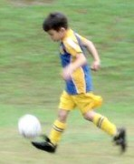
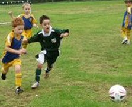
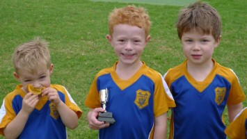

| Match Report - 01 May 2010 |
|
|
|
|
|
|
|
|
|
|

Our third match of the season proved to be an nail-biting entertainer!
The Green B's performance mirrored the weather for the match. It started off foggy
& grey, then finished with a huge burst of sunshine!
During the first half, the Green B's defensive line was tested on a number of
occasions by their opponents All Saints Hunters Hill.
Lachlan, Ryan, Jayden, Luke & Brandon's united defensive efforts helped to minimise
All Saint's scoring opportunities, while Jasmine & Luka combined at the front to
test All Saints' defence.
It was a different team that took the pitch during the second half. The Green B's
exploded with confidence and unity, which resulted in goals, goals, GOALS!!!

Jayden and Jasmine combined in the mid-field to produce great passes to our forwards
Luke & Luka, who didn't waste these beautiful passes & converted them to goals at
every available opportunity.
Brandon's exceptional speed & attack hurt the All Saints defence, while Lachlan &
Ryan maintained a strong back line, that proved difficult to crack.
This week's Player of the Match Award went to Lachlan for his determined & strong
defence throughout the match. Well done Lachlan! Congratulations Green B's on a
wonderful display of unity & a never-say-die attitude. You should all be very proud
of the sprit in which you played this game.

- Michael Opacic
|
|
|
| U6 Red A |
|
North Ryde 2 - Saints United A 3
|
|
|
|

There was a little sprinkle in the air, but the team was looking forward to the
third round clash with Saints United. Tradition for the team is to shake hands
with the other team and wishing each other a good game. Saints United kicked off
and it was game on.
The boys showed marvellous energy. Will did a great block and created a good chance
by running at the goal. Jayden, although bruised from a backyard incident, worked
hard for the team.
Alex was a menace for the opponent. He worked hard and had a
couple of chances. Bailey, in only his second game, showed great flair and is
building up experience.
Lucas was again a rock on the midfield, passing the ball and defending back when
needed. Archie scored some goals and looked for his team mates to pass the ball
to. At one instance we had the combination, Archie to Cameron to Archie to Will.
Fantastic to see the boys showing these skills. Cameron was again a lion on the
field.
The team is going really well, and although we lost by the smallest of margins,
and there is still a lot to learn, we can already see a great team taking shape.
Congratulations to the player of the week: Will
- Coach Marc
|
|
|
|
|
|

A cold, drizzly morning did not dampen the boy's spirits this week as they took to
the field and met their opposition, the Putney Rangers. It was clear from the outset
that this would be no goal-fest for the mighty North Ryde As, as a sea of red shirts
pounded our players like a black-booted tsunami - without warning or mercy. When
Coach Duncan pulled up the Rangers for rough play, the game proceeded in a less
hostile but equally charged manner.
The light rain made the grass nice and slippery and Putney Rangers took full
advantage of these conditions with some interesting slide tackles. Sometimes all
you could do was fall over when too many boots made contact with the wet ball. Ryan
copped a few flying boots but recovered quickly and, after a brief rest on the
sideline, was back into play. So brave!
After a few close goals Aston eventually broke through an almost inpenetrable wall
of Rangers to score. Another great game for Ashie and well deserving of this week's
trophy for Player of the Week. This effort was matched by some great defensive play
by Oliver who at one point thundered in like a runaway steam train to deflect an
almost certain goal-scoring kick from the opposition.
Max was the quiet achiever and, with all the fancy footwork of a finalist in a
popular television dance show, two-stepped the ball up the field for a few choice
goal scoring opportunities for Ashton and Toby in the second half. Due to a managing
technicality poor Toby spent the entire game on the field. When interviewed after
the match about his extended time on the field he simply smiled and asked for some
water. Good one Toby.
Ben was strangely absent this week. Where were you Ben?... we missed you!!
The North Ryde As had their first loss this weekend with the final score at 3-6.
Their tenacity in the face of defeat was a credit to the boys and despite the score,
the result was a wonderful display of genuine courage and sportsmanship. Well done
team!!
- Paul Watson
|
|
|
|
|
|
A big improvement in the 2nd match for the U6 White B's.
This week, everyone in the team was focused on chasing the ball and having a go.
The highlight of the first half was a clean break down the middle of the pitch
made by Riley, before slotting through a perfect pass to Joshua who narrowly
missed out on opening the team's account for 2010 shooting just to the left of
the posts.
There were further chances created, with Christian, Alexis, and Joshua all putting
themselves in the right positions to score. A good 1st game by Idan, and special
mention to the defensive efforts of the whole team.
Congratulations to Alexis for being voted Player of the Week.
- Will
|
|
|
|
|
|
Although the skies were angry it didn't stop the capacity crowd from pouring into
the Santa Rosa stadium to view a display of soccer, which would go down in history
as second to none. The boys turned up early for some last minute coaching and to
choose the battle cry for the week, many calls were discussed but all agreed on
'space'.
With the blow of the whistle, which could scarcely be heard over the ecstatic crowd,
the game was on. A quick charge up the field with some superb passing that had the
opposition scrambling to defend their goal. It wasn't until a corner kick found Will
Smith in some free space that allowed him to open the account for the day.
Once the floodgates were open the boys showed the skills many a professional player
would be envious of. Thomas Bain once again became an impenetrable wall, the likes
of which China would have been proud, and stopped many an opposition run dead in it's
tracks. Hamish Saba, with a turn of speed similar to a falcon diving on its prey,
would swoop from nowhere as if in stealth mode to push the ball back in the goal
zone where Aniruddh Nair and Evan Ryper were waiting to place the ball with the
accuracy of a brain surgeon back into the danger zone allowing Finn Hurst to top up
the account not once or twice but numerous times.
The second half was more of the same with Evan just missing out on a goal and hitting
the post. Poor Aniruddh possibly mishearing the battle cry of 'space' bravely stopped
a 'cannon' of a shot with his face but after a quick check returned to finish the
match.
At the final whistle the score was 8-2 to North Ryde, but to this sideline reporter
the score was second place to the sportsmanship shown and the skills displayed on
the field that day. Well done boys you did yourselves and the coach proud!
- Brian Smith
|
|
|
|
|
|
We all scored a goal and Fletcher scored about three goals. Martin got the trophy
for scoring some goals and never giving up.
And I was a bit sleepy.
- Luke Eastwood
|
|
|
|
|
|
Everyone looked eager to get going for a 9.15 start to the game. A bit of rain made
it even more fun for the kids to play. Chris, our coach was intense with his pre-game
training, we could all sense this was going to be a great game!
The opposition team took their places on the field and we were ready to go. Things
got off to a blistering start, with Dominic scoring the first goal. Sam and Leonardo
were really enthusiastic and were rewarded with a goal each. Ibrahim made some magic
runs and was unlucky not to score, and Emma made some brilliant runs down the middle,
marking her opponent and calling for the ball. Jake's kick-ins from the sideline
were like cannon balls, all well placed, his confidence and skills increase with
each game.
The second half was just as good, Ibrahim scored twice, and Isaac kept on the ball
with gusto all game and came very close to scoring. Great defending and attacking
by all players. Mention must be given to Emma, who did a terrific back kick, and
called for the ball all game.
Congratulations to Ibrahim for being voted Man of the Match.
Well done coach and team.
- David Perri
|
|
|
| U7 White B |
|
North Ryde 3 - All Saints Hunters Hill A 3
|
|
|
|
What an action filled game NRS U7s White B played on Saturday. There were thrills
and spills and a lot of excitement.
All Saints HH A scored a few early in the game, but the determination and passion
of NRS resulted in a very well deserved draw. Luca, Cameron, Emily, Rishi and Oliver
almost converted several great attacking plays, Kevin converted 2 goals and Liam 1
goal right on the final whistle (literally).
Andy was a great coach/umpire keeping the team motivated. Player of the match
trophy made it's first appearance and Kevin was very excited to take it home for
the week.
Well done everyone, great team spirit!
- Sarah Robson
|
|
|
| U8 Red B |
|
North Ryde 4 - Gladesville Ravens 0
|
|
|
|
First half commenced well with convincing shots on goals by Jarrod and Aidan. First
goal setup by Aiden with Nathaniel tapping in.
The only Ravens attack came from a goal kick, unmarked forward on half way running the
ball, but well defended by Kaiden in goal. Excellent midfield work by Luke and Jay.
Second half points came after a great phase of play which saw Luke A pass through
three defenders and score.
Nathaniel scored next after support from Jarrod. A final home goal came after a
convincing strike on goal by Blake was defended by a Ravens back into the goal.
Final Score 4-0. Player of the match: Nathaniel
- John Chappell
|
|
|
|
|
|
It was a close game on Saturday for the U8 Yellow team against Roselea.
A fantastic goal by Raphael in the first half.
The second half was even more exciting when Ethan's goal leveled the score at
2 all. There was a great show of sportsmanship by the team.
Unfortunately in the last 5 minutes the other team scored the final goal for the
game, ending it at 3-2 to Roselea.
- Hong Tat
|
|
|
|
|
|
It's a bit harsh to call it a lesson in football but that's what our boys served up
to Ryde Saints United last Saturday.
From the opening whistle, North Ryde began to dominate with a clever short passing
game. Our strikers were so tricky that they won two penalties. Charlie's attempt
with the first went just wide of the left post; and Adam slotted the second into
the left corner of the net.
Three goals were scored in the first half, the first off the boot of Charlie and
the next two by Adam. Timothy in goals rarely touched the ball all half!
Thomas M and David were winning everything in midfield and distributing the ball
with good wide passing. Tommy H went for a galloping run through the midfield and
was playing the ball wonderfully.
David scored a great strike in the second half after the ball was taken down the
right by Eli. Sitting off the back of the box the ball was cut back and then hit
first time - back of the net.
Another goal by Adam rounded off his hat trick, and Shannon put a further two in
the back of the net before the final whistle blew. All in all, a great team effort
- well done guys. The final result of 7 - 0 to North Ryde says it all!
- Simon Ambler
|
|
|
|
|
|
At Magdala, in overcast and cool weather conditions, our team was preparing for a
tough challenge against the undefeated Redbacks.
First Half
The first half consisted of great tackling and strong attacking by Nicholas,
stopping an early goal with a solid tackle.
There was lots of communication going on between our strikers Lachlan and Anthony.
Jack continued chasing throughout the match. Peter also contributed with an excellent
clearing shot, taking the pressure off our fullbacks.
The first half was interrupted by many injuries. Then unfortunately we allowed a goal
in to the Redbacks.
Second Half
The Redbacks scored 2 goals straight away in the second half, not to mention more
injuries.
Our team defended well to deny the opposition any more goals. Good effort by everyone,
the Redbacks are one hard team to beat but watch out next time we meet!
Then Harrison scored a goal, proving the Redbacks aren't totally unbeatable.
Players of the Match
1st - Harrison Saba
2nd - Nicholas Marquis
3rd - Lachlan Marquis
- Jane Cantali
|
|
|
|
|
|
There were smiles all round as the mighty Under 12/6's collected their first win for
the season with an emphatic 4-0 victory over West Ryde Rovers at North Ryde Oval.
Supported by a vocal selection of soccer mums barracking from behind the canteen
counter as well as a good turn out of supporters on the sidelines, the boys responded
with enthusiasm and put in their best display for the season.
Match highlights included:
-
Dom who clearly benefitted from his mid-week goal keeper training taking full
control of the box and enthusiastically guiding his defenders
-
Kevin who showed some real turns of speed in chasing down opposition attacks
-
Will and Lucas who are showing real consistency in their roles in central mid
and defence
-
Andrew who worked hard all day and was unlucky to be called off-side when having
a goal disallowed
-
Karan was named Captain for the day and to his credit played his best game of
the season thus far and was a deserving player of the week
-
Alex playing a masterful role in the mid-field showing some real deft touches
and great passes to players in space
-
Connor was rock-solid in defence
-
Bezhad got involved at every opportunity
-
Cameron didn't stop running all day
Finally special thanks must go to Lachlan; Douglas and Matthew from the U11's (and
their parents) who came and lent a hand in making up numbers, as well as contributing
some essential goal scoring skills!
The post match lamingtons supplied by Karan tasted all the more sweeter after this
effort.
- David Hoy
|
|
|
|
|
|
This was an exciting and very evenly poised game for all of the first half which
finished 0-0. The boys showed determination and commitment throughout the first half
and more than matched Thornleigh in all aspects of the game.
The second half started as the first half finished with our boys playing strongly
until the awarding of a penalty. Sam B who played strongly in goal brilliantly saved
the penalty at first attempt however Thornleigh unluckily were first to the rebound
which they converted. Thornleigh scored a further 3 goals in the second half including
an own goal which took an unlucky deflection from the head of one of our defenders.
This game was a vast improvement by the team and the scoreline certainly wasn't a
true reflection of the way the game unfolded. To their credit the boys continued to
perform strongly until the final whistle. Most pleasingly they supported and
encouraged each other and at no time showed disappointment or frustration with each
other or the way the game progressed.
Given the wholehearted team effort it is difficult to single out any one standout
player as everyone gave their best and everyone should be proud of their own efforts
in this game. Given the improved showing and the availabilty of the full squad a win
is just around the corner.
- Bill Greer (Manager)
|
|
|
|
|
|
North Ryde's finest gathered on the banks of Magdala Oval and laced there boots,
unsure what this tussle with the Hills Hawks would bring. The Hawks sat one point
ahead of our heroes, and were coming off an impressive victory against the highly
fancied Red Backs the previous week. These proud men from North Ryde new they were
up against it, they were depleated in numbers, and a massive reshuffle of troops
positioning was on the cards if these men were to have any chance to compete.
Their athletic keeper was away on a triathlon, throwing the team into further
disarray. "Who the bloody hell is going to keep for us?!" cried Crusher, the team's
inspirational captain/coach. The team sheepishly looked around, trying to avoid eye
contact, nobody wanting to put on the gloves. "Throw me those gloves, and get out
of my way!" boomed a voice from the shadows. This man strode across to the kitbag,
tore off his shirt to reveal a perfectly muscled male physique, threw the keeper's
guernsey over his broad rippling shoulders and strode through the Hills Hawks players
eyeballing every one of them on his way to the pitch. "On ya Woody!" chorused the men
from North Ryde's finest as they, too, entered the field.
The Hawks started strongly, undoubtedly buoyed by the lack of subs on the blue and
gold bench, and should have been rewarded from their hard work. Only to be thwarted
at every turn from a granite wall of defence and some saves from the keeper that had
to be seen to be believed. During one such save, eight minutes nto the game, the
keeper dived to the top right corner, caught the ball cleanly in both hands, rolled
to his feet and sprinted to the end of his box all in a blink of an eye, hurled the
ball to half way at the feet of their gifted midfielder "Damo', who beat two hapless
Hawks and put a lovely through ball to the fleet-footed "Lukey" who as easy as you
like, slots it past the bewildered keeper.
Again the Hawks threw everything at our heroes, with ferocious attack after attack
repelled from deep within blue and gold territory. At the 23rd minute, Cowie decides
to go on a scamper down the right flank and it seemed as if he beat the whole team
with his fancy footwork down the sideline. They subbed their five from the bench and
he beat them as well, and went on to find the ever present Crouchy in the box, who
dutifully slammwd the ball into the back of the net. Not satisfied with himself for
not yet bothering the scorers, Cowie blasted in a thunderbolt from 40 yards out to
have our heroes jogging to the sheds at half time with a 3-0 lead.
The Hawks must of copped a pasting from their coach at half time because they played
the next 15 minutes in a blitzkrieg style of play, that had North Ryde's finest
playing from the back foot. Eventually they were rewarded with a goal from a brilliant
shot that rocketed into the top right corner. Our heroes immediately struck back
through Cowie to put the score up to 4 - 1. To their credit the Hawks stuck to their
guns, and with fresh subs again attacked our heroes. During one such counter attack
Cowie had his legs viciously taken out from under him. The referee awarded a free kick
37 yards out and 5 inches from touch, which Cowie simply strolled up to and thundered
it at the goals. The keeper didn't want anything to do with it in case he broke his
arm, made a half-arsed attempt and then picked the ball up out of the back of the net.
The Hawks jagged a goal from a deflection of Crusher's head with about 15 to go, which
only inspired Cowie to finish his day off with another twinkle-toed run and another
goal to give him a much deserved hat-trick.
6-2 was the referee's final notation in his book, as North Ryde's finest again showed
what staunch stuff these men are made of as they climb the ladder in this competition
by trampling their opposition with a will to win un-matched in its ferocious beauty.
- LJ Woodford
|